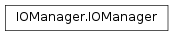

IOManager¶
About the IOManager class¶
The WaveBlocks Project
@author: R. Bourquin @copyright: Copyright (C) 2010, 2011, 2012, 2013, 2014, 2015, 2016 R. Bourquin @license: Modified BSD License
Inheritance diagram¶
Class documentation¶
-
class
WaveBlocksND.IOManager[source]¶ An IOManager class that can save various simulation results into data files. For storing the data we use the well established HDF5 file format. An IOManager instance abstracts the input and output operations and translates requests into low-level operations.
-
create_block(blockid=None, groupid='global')[source]¶ Create a data block with the specified block ID. Each data block can store several chunks of information, and there can be an arbitrary number of data blocks per file.
Parameters: blockid – The ID for the new data block. If not given the blockid will be choosen automatically. The block ID has to be unique. Returns: The block ID of the created block.
-
create_file(filename)[source]¶ Set up a new
IOManagerinstance. The output file is created and opened.Parameters: filename – The filename (optionally with filepath) of the file we try to create. If not given the default value from GlobalDefaults is used.
-
create_group(groupid=None)[source]¶ Create a data group with the specified group ID. Each data group can contain an arbitrary number of data blocks, and there can be an arbitrary number of data groups per file.
Parameters: groupid – The ID for the new data group. If not given the group ID will be chosen automatically. The group ID has to be unique. Returns: The group ID of the created group.
-
find_timestep_index(timegridpath, timestep)[source]¶ Lookup the index for a given timestep. This assumes the timegrid array is strictly monotone.
-
get_block_ids(groupid=None, grouped=False)[source]¶ Return a list containing the IDs for all blocks in the current file structure.
Parameters: - groupid – An optional group ID. If given we return only block IDs for blocks
which are a member of this group. If it is
Nonewe return all block IDs. - grouped – If
Truewe group the block IDs by their group into lists. This option is only relevant in case the groupid is not given.
- groupid – An optional group ID. If given we return only block IDs for blocks
which are a member of this group. If it is
-
get_group_ids(exclude=[])[source]¶ Return a list containing the IDs for all groups in the current file structure.
Parameters: exclude – A list of group IDs to exclude. Per default no group is excluded.
-
get_group_of_block(blockid)[source]¶ Return the ID of the group a given block belongs to or
Noneif there is no such data block.Parameters: blockid – The ID of the given block.
-
get_number_blocks(groupid=None)[source]¶ Return the number of data blocks in the current file structure.
Parameters: groupid – An optional group ID. If given we count only data blocks which are a member of this group. If it is None(default) we count all data blocks.
-
must_resize(path, size, axis=0)[source]¶ Check if we must resize a given dataset and if yes, resize it.
-